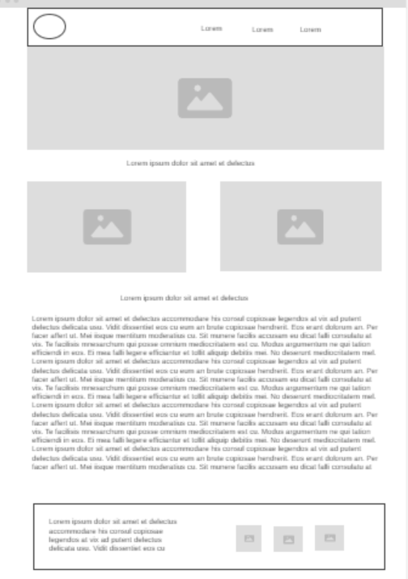

Why Kampala Chamber of commerce?
Kampala chamber of commerce is meant to help business owners attain more collaborations together with other business owners as it trains them to be effecient in their businesses. It also gives back to the community by both teaching locals skills and about business and also developing the community servives as infrastructres are improved as the organisation run.
What events will the chamber be holding this month that promote business-to-business networking?
This month on the 25th, the chamber will hold a leadership training that will orient all interested business leaders on increased marketing, new AI changes and how they can be implemented in their businesses and how to profit from being updated, also for the leaders to be on top of their game in their particular business.
How will the chamber benefit the community
Roads and other infrastructures are to be bilt and improved as more tourist are expected to increase who visit kampala and it's beautiful natural features. Furthermore, comunity members wil be given a thorough training on how they can become better busines owners for those who have businesses and how to create succesful businesse for those who don't.
What is the age range that will participate
The chamber will have two types of trainings as far as age is concerned, the first will be for teenagers from the age of 14 to 17 years and the second will be from 18 years and above. The different age brackets will be trained according to their needs and abilities by the different project leads.
Wireframes
Below are some wireframe images that represent the layout and design of the kampala home page.
Large Screen
Small Screen
.png)
Ready to continue with the Chamber Project?
If this is an organisation that you believe you could benefit from or help others, the journey begins noe!